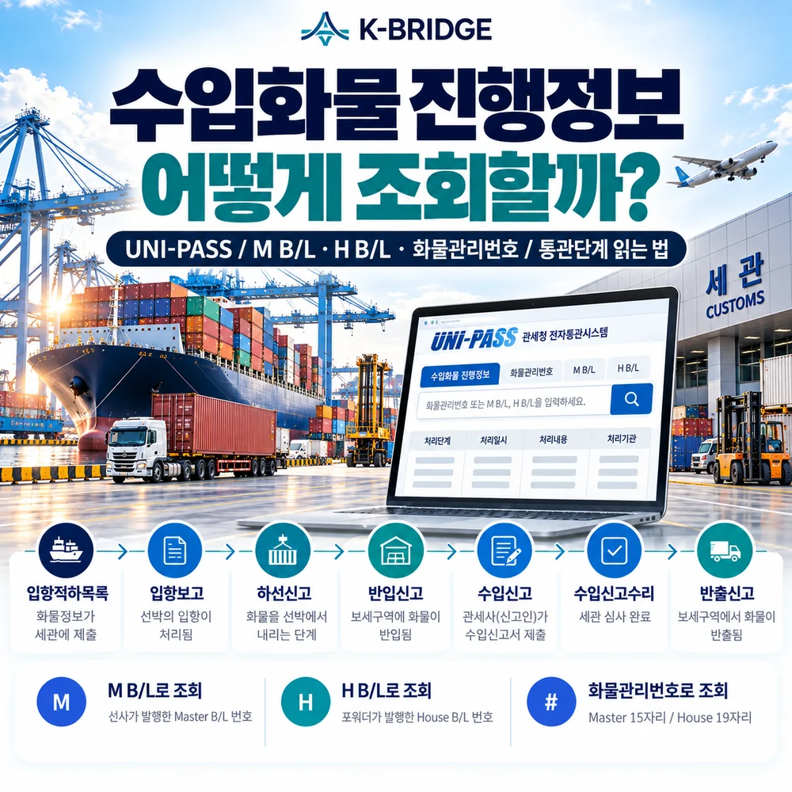
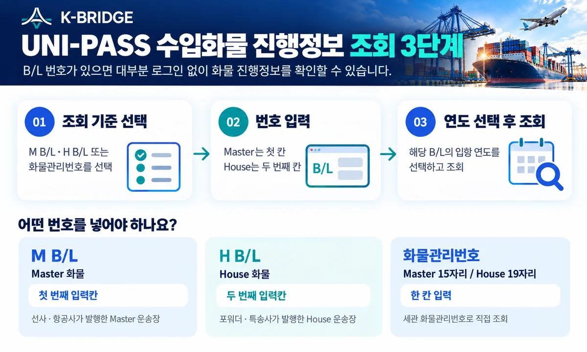
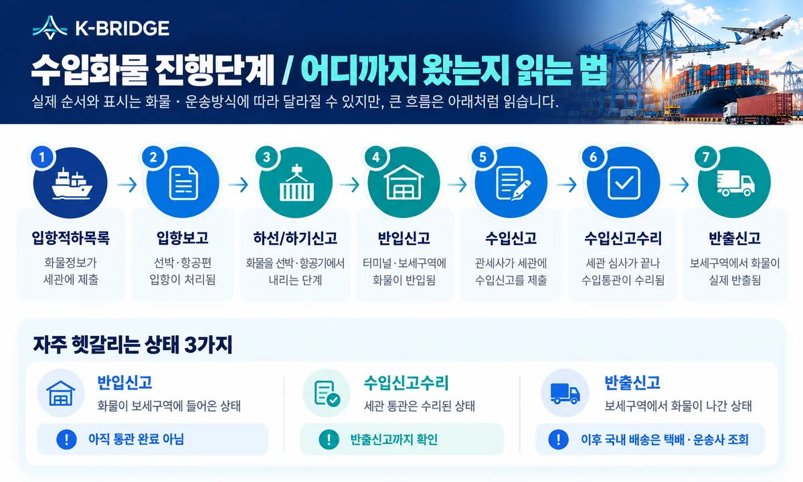
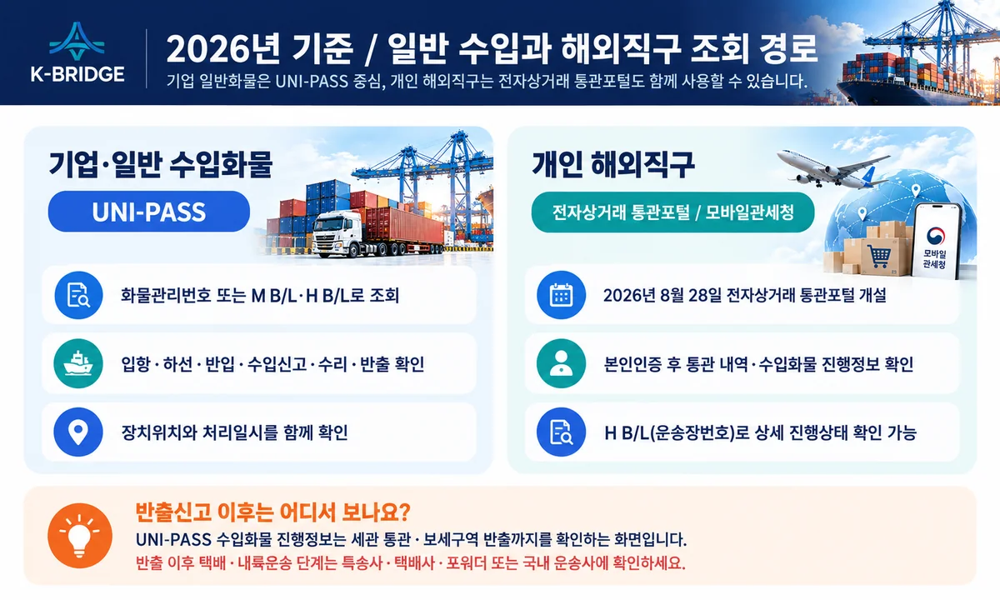

먼저 이것만 기억하세요
수입화물 진행정보는 UNI-PASS에서 M B/L·H B/L 또는 화물관리번호로 조회할 수 있습니다. 가장 중요한 것은 화면 상단의 한 줄 상태만 보는 것이 아니라 처리단계, 처리일시, 장치위치, 수입신고수리와 반출신고 여부를 함께 보는 것입니다.

1. 조회 전에 어떤 번호를 준비해야 할까요?
가장 쉬운 방법은 B/L 번호를 사용하는 것입니다. 일반 해상·항공 수입화물은 선사·항공사 또는 포워더가 발행한 운송장 번호로 조회하는 경우가 많습니다.
| 조회 기준 | 누가 주로 사용? | UNI-PASS 입력 위치 | 실무 포인트 |
|---|---|---|---|
| M B/L | Master 화물 | M B/L - H B/L 선택 후 첫 번째 칸 | 선사·항공사 Master 운송장 기준 |
| H B/L | House 화물 / 포워딩 / 특송 | 두 번째 칸 | 포워더 발행 B/L, 직구 운송장에 많이 사용 |
| 화물관리번호 | 세관 화물관리번호를 알고 있을 때 | 화물관리번호 선택 | Master 15자리 / House 19자리 |
조회가 안 된다면 먼저 연도를 확인하세요. UNI-PASS 화물진행정보는 B/L 번호와 함께 해당 화물의 입항 연도를 선택해 조회합니다. House 화물인데 첫 번째 Master 칸에만 번호를 넣는 경우도 자주 발생합니다.
2. UNI-PASS에서 수입화물 진행정보 조회하는 방법
- UNI-PASS에 접속합니다. 메인 화면의 ‘화물진행정보’를 이용하거나 정보조회 → 통관물류정보 → 수입화물 진행정보 → 수입화물 진행정보 메뉴로 이동합니다.
- 조회 방식을 선택합니다. B/L 번호가 있으면 ‘M B/L - H B/L’, 화물관리번호가 있으면 ‘화물관리번호’를 선택합니다.
- 번호와 연도를 입력합니다. Master B/L은 첫 번째 칸, House B/L은 두 번째 칸에 입력하고 해당 입항 연도를 선택합니다.
- 조회 결과에서 최신 처리단계를 확인합니다. 화면의 ‘통관진행상태’만 보지 말고 아래 처리내역의 최근 일시와 장치위치를 함께 확인합니다.
관세청 FAQ도 같은 경로와 입력 방식을 안내하고 있습니다. 해외직구 운송장번호는 House B/L인 경우가 많아 두 번째 H B/L 입력칸에서 조회하는 방식이 일반적입니다.

3. 수입화물 진행단계는 이렇게 읽으면 쉽습니다
관세청 안내 기준의 일반적인 흐름은 적하목록 → 입항 → 하선·하기 → 반입 → 수입신고 → 수입신고수리 → 반출입니다. 실제 화물은 보세운송, 검사, 정정 등으로 중간 단계가 추가되거나 순서가 달라질 수 있습니다.
| 화면에 보이는 단계 | 쉽게 말하면 | 아직 남은 일 |
|---|---|---|
| 입항적재화물목록 심사완료 | 화물정보가 세관 심사를 마침 | 실제 입항·하역·반입 |
| 입항보고 수리 | 선박·항공편의 입항보고가 처리됨 | 하선·하기 및 반입 |
| 하선신고 / 하기신고 수리 | 화물을 선박·항공기에서 내리는 절차가 처리됨 | 보세구역 반입 |
| 반입신고 | 터미널·보세창고에 화물이 들어옴 | 수입신고·심사·세금납부 등 |
| 수입신고 | 수입신고서가 세관에 제출됨 | 심사·검사·요건확인·세액처리 |
| 수입신고수리 | 세관의 수입통관 처리가 완료됨 | 보세구역 실제 반출 |
| 반출신고 | 화물이 보세구역에서 실제로 나감 | 국내 배송·납품 |
4. 화면에서 자주 헷갈리는 상태는 이렇게 해석하세요
“입항적하목록 심사완료인데 화물이 안 나왔어요”
적하목록 심사는 화물정보에 대한 세관 심사가 끝난 것입니다. 실제 선박·항공기 입항과 하선·하기, 터미널 반입까지 완료됐다는 뜻은 아닙니다. 입항보고·하선신고·반입신고가 이어졌는지 확인하세요.
“반입신고가 떴는데 왜 통관 완료가 아니죠?”
반입신고는 화물이 세관의 관리 아래 있는 보세구역에 들어온 상태입니다. 일반 수입신고 대상이라면 관세사가 수입신고를 제출하고 세관 심사·검사·요건확인·세액처리가 이어질 수 있습니다.
“수입신고수리인데 왜 출고가 안 되나요?”
수입신고수리는 세관 통관이 완료됐다는 의미지만 실제 창고나 터미널에서 화물이 나간 것은 반출신고로 확인하는 것이 좋습니다. 반출작업·배차·터미널 운영시간 때문에 시간이 더 필요할 수 있습니다.
“반출신고(보세)가 있는데 최종 배송된 건가요?”
보세운송을 위해 첫 번째 보세구역에서 반출된 경우일 수 있습니다. 다른 보세창고로 이동한 뒤 다시 반입신고가 나타날 수 있으므로 장치위치가 어디로 바뀌었는지 함께 확인하세요.
5. 조회 결과에서 꼭 봐야 할 항목
- 통관진행상태: 현재 전체 흐름이 어디까지 왔는지 먼저 확인합니다.
- 처리단계와 처리일시: 가장 최근 이벤트가 언제 발생했는지 봅니다.
- 장치위치: 터미널·보세창고 등 현재 화물이 어느 보세구역에 있는지 확인합니다.
- M B/L / H B/L·화물관리번호: 내가 조회한 화물이 맞는지 번호를 다시 대조합니다.
- 선사·항공사 / 선박·항공편: 실제 입항편과 선적 정보를 확인합니다.
- 신고번호·반출입 관련정보: 수입신고·보세운송·반출 흐름을 확인할 때 활용합니다.
처리일시가 멈춰 있다고 바로 문제가 생긴 것은 아닙니다. 검사, 서류보완, 요건확인, 세금납부, 터미널 작업, 보세운송 등 실제 업무가 진행 중일 수 있으므로 포워더·관세사와 다음 대기 사유를 확인하는 것이 정확합니다.

6. 2026년에는 해외직구 조회 경로가 하나 더 생겼습니다
관세청은 2026년 8월 28일부터 전자상거래 통관포털을 개설했습니다. 개인 해외직구 사용자는 본인인증 후 통관 내역, 수입신고 내역, 거래 내역과 수입화물 진행정보 등을 한곳에서 확인할 수 있습니다.
기업의 일반 수입화물이나 포워딩 화물은 기존처럼 UNI-PASS 수입화물 진행정보가 핵심 조회 화면입니다. 개인 직구는 전자상거래 통관포털이나 모바일관세청을 함께 활용하면 편리합니다.
반출 이후 국내 배송은 별도입니다. 관세청 안내에 따르면 수입화물 진행정보는 세관 통관에 따른 반출신고 이후 택배·국내 배송단계까지 보여주는 화면이 아닙니다. 반출 후에는 특송사·택배사·포워더·국내 운송사의 배송조회를 이용하세요.
7. 수입화물 진행정보를 볼 때 실무 체크리스트
- B/L 종류 확인: Master인지 House인지 구분하고 올바른 입력칸에 조회합니다.
- 입항 연도 확인: 연도 선택이 잘못되면 같은 B/L 번호라도 조회되지 않을 수 있습니다.
- 한 줄 상태만 보지 않기: 최신 처리단계·처리일시·장치위치를 함께 봅니다.
- 반입과 통관 완료 구분: 반입신고는 보세구역 도착이지 수입통관 완료가 아닙니다.
- 수리와 반출 구분: 납기 확인은 수입신고수리뿐 아니라 반출신고까지 봅니다.
- 보세운송 여부 확인: 반출 후 다른 보세창고로 이동하는 건이면 다음 반입 위치를 확인합니다.
- 진행이 오래 멈추면 사유 확인: 검사·보완·요건·세액·터미널 작업 여부를 관세사·포워더에게 확인합니다.
KEY TAKEAWAYS / 이 글에서 기억할 것
1. 조회는 M B/L·H B/L·화물관리번호 중 하나로 시작합니다.
2. 반입신고는 통관완료가 아니고, 수입신고수리는 세관 심사 완료를 뜻합니다.
3. 실제 출고 여부는 반출신고까지 확인하는 것이 좋습니다.
4. 반출 이후 국내 배송은 UNI-PASS가 아니라 운송사 조회로 이어집니다.
8. 자주 묻는 질문
Q. M B/L과 H B/L 중 어디에 번호를 입력해야 하나요?
Q. ‘입항적재화물목록 심사완료’면 화물이 한국에 도착한 건가요?
Q. ‘반입신고’가 떴으면 통관이 끝난 건가요?
Q. ‘수입신고수리’와 ‘반출신고’는 무엇이 다른가요?
Q. 수입신고수리 후에도 화물이 바로 배송되지 않는 이유는 무엇인가요?
Q. 해외직구 물품도 같은 화면에서 조회할 수 있나요?
NEXT STEP
이 글과 함께 보면 좋은 자료
진행상태를 봐도 다음 조치가 헷갈리면 실제 화물 기준으로 확인하세요
KBRIDGE는 B/L·입항정보·통관단계·장치위치와 실제 선사·관세사·터미널 진행상황을 연결해 수입화물의 다음 일정을 확인합니다.